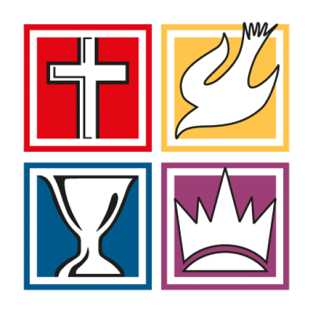

Sunday Service
9:00 AM – 11:00 AM

Baguio City Foursquare Church
Hebrews 13:8
Welcome to Baguio City Foursquare Church — a family growing together in faith, worship, prayer, and service. We are glad you are here, and we would love to worship with you.
Join us
Come and worship with the BCFC family.
9:00 AM – 11:00 AM
7:00 PM – 9:00 PM
7:30 PM – 9:30 PM
What's happening
Activities marked as public by the BCFC Workers team will appear here automatically.
Visit us
Baguio Foursquare Family Center
Foursquare family in Baguio
Find a Foursquare church near you in Baguio City.
Pastor: Rev. Orlando S. Villegas
046 Interior Ledesma St., Aurora Hill, Baguio City
View MapPastor: Ptra. Narcisa P. Belino
062 Ledesma St., Aurora Hill, Baguio City
View MapPastor: Ptra. Rose Marie M. Dontogan
1 Yandok St., Baguio City
View Map7 Quirino Hill Road, Quirino Hill East, Baguio City
View Map96 Purok Pidawan, Loakan Rd, Baguio City
View MapMarcos Highway, Baguio City
View MapStay connected
Join the BCFC online service and keep up with church updates through our Facebook page.
Watch on FacebookWhether you are visiting for the first time or have been part of our family for years, there is a place for you at BCFC.
Contact Us